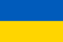
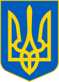

- Назва
- Географія та природа
- Розташування
- Рельєф
- Клімат
- Історія
- Стародавність
- Середньовіччя
- Новий час
- Державний устрій
- Конституція України
- Законодавча влада
- Президент України. Виконавча влада
- Зовнішня політика
Назва
Слов'янське слово «Україна» вперше згадується в Київському літописному зводі за Іпатіївським списком під 1187 роком.
Ним окреслювали терени Переяславського князівства, що входило до історичного ядра Русі поруч із Київським
Чернігівським князівствами. Це слово також зустрічається в руських літописах під 1189, 1213, 1280 1282 роками,
позначаючи Галичину, Західну Волинь, Холмщину й Підляшшя. У литовських польських хроніках та офіційних документах
XIV—XVII століття «Україною» в широкому значенні називали руські землі Галичини, Волині, Київщини, Поділля й
Брацлавщини, а у вузькому — територію середнього Подніпров'я. Таке ж двояке значення цього слова зберігалося й із
середини XVII століття, після постання руської держави Війська Запорозького. У зв'язку з входженням частини
земель Русі до складу Московського царства, а згодом Російської імперії, слово «Україна» закріпилося за
регіоном Подніпров'я; ним також позначали Слобожанщину. Після перейменування Московського царства на
Російську імперію 1721 року, українські землі почали називати «Малоросією». У другій половині XIX століття —
початку XX століття, під впливом національного руху руської інтелігенції, назва «Україна» набирала значення
руської етнічної території, а сам етнонім «русини» був витіснений етнонімом «українці». 1917 року була
проголошена перша держава, яка використала слово «Україна» у своїй офіційній назві, — Українська Народна
Республіка.Етимологія слова «Україна» достеменно не відома. Згідно з теорією, якої дотримуються більшість
українських дослідників, «Україна» походить від слів «країна» чи «край», тобто «у» означає «рідний», «свій».
Таким чином «україна» — антонім слова «чужина». Згідно однієї з інших теорій, що утворилася під впливом
польської та російської історіографії, воно означає «околицю» (рос. окраину) чи «прикордоння». У попередніх
століттях для позначення території України вживали слова «Скіфія», «Сарматія», «Русь», «Рутенія», «Росія»,
«Малоросія», «Військо Запорозьке», «Гетьманщина» тощо.
Географія та природа
Розташування. Україна розташована в південно-східній частині Європи. Вона має спільні сухопутні державні
кордони з Білоруссю на півночі, з Польщею на заході, зі Словаччиною, Угорщиною, Румунією Молдовою на
південному заході й із Росією на сході. Південь України омивається Чорним та Азовським морями. Морські
кордони вона має з Румунією Росією. Загальна площа України становить 603 700 км², вона становить 5,7 %
території Європи й 0,44 % території світу. За цим показником вона є другою за величиною серед країн Європи
після Росії (або найбільшою країною, яка повністю лежить у Європі). Площа виключної морської економічної
зони України становить 72 658 км². Код країни за системою ISO 3166-1-alpha-2 — UA[28]. Територія України
витягнута із заходу на схід на 1316 км з півночі на південь на 893 км, лежить приблизно між 52° 20′ та 44°
23′ північної широти й 22° 5′ 41° 15′ східної довготи.
Рельєф У рельєфі України переважають рівнини (95 % від усієї площі), що належать до південно-західної
окраїни Східноєвропейської рівнини. Вони поєднують Поліську, Придніпровську й Причорноморську низовини, що займають
70 % поверхні України, а також Волинську, Подільську, Придніпровську, Донецьку й інші височини. Пересічна абсолютна
висота рівнин становить 175 м. В Україні знаходиться найвища точка Східноєвропейської рівнини — гора Берда, висотою
515 м над рівнем моря. Гірські масиви в Україні представлені частиною Карпатських гір — Українськими Карпатами, де
розташована найвища вершина України — гора Говерла (2061 м над рівнем моря), й Кримськими горами, найвищою вершиною
яких є гора Роман-Кош (1545 м). Сейсмічність України проявляється в західних, південно-західних в
південних районах, які розташовані поблизу потужного Середземноморсько-Альпійсько-Трансазійського сейсмогенного
поясу планети, де виділяються два основні сейсмічні регіони: Карпатський Кримсько-Чорноморський. Значна частина
території піддається впливам власних (місцевих) землетрусів сильних підкорових землетрусів зони Вранча (Румунія).
Клімат Територія України лежить переважно в помірно-континентальній області помірного кліматичного поясу
зі зростанням континентальности з північного заходу на південний схід. Південний берег Криму виділяється в окремий
регіон субтропічного середземноморського клімату. В Українських Карпатах Кримських горах висота місцевості й
експозиція схилів зумовлюють вертикальну зональність клімату. Середньорічна температура повітря в Україні
коливається від +11…+13 °C на півдні до +5…+7 °C на півночі. Пересічна середня температура найхолоднішого місяця
(січня) змінюється від −7…−8 °C на північному сході до 0 °C у степовому Криму й +2…+4 °C на Південному узбережжі
Криму. У найтеплішому місяці (липні) середньомісячна температура змінюється від +17…+19 °C на півночі й північному
заході країни до +22…+23 °C у південних районах +25 °C — на Південному узбережжі Криму. Найнижча температура
повітря на території України зафіксована 8 січня 1935 р. у Луганську. Унаслідок вторгнення повітряних течій з
Арктики температура знизилася тут до −42 °C.
Історія
Стародавність Перші археоантропи на території сучасної України з'явилися в епоху раннього палеоліту,
понад 900—800 тис. років тому[60]. Люди сучасного типу — Homo sapiens (кроманьйонці) сформувалися у період
верхнього палеоліту, понад 40—35 тис. років тому. Це були представники європеоїдної раси, мисливці-збирачі,
що мали родову організацію. Одним із культових центрів кроманьйонців був природний останець Кам'яна Могила.
Понад 10 тис. років тому відбулося танення льодовика, що сприяло збільшенню населення. Стабілізувався ландшафтний
поділ України на лісову, лісостепову степову зони, утворився близький до сучасного ґрунтовий покрив.
Криза привласнювального господарства поступово змусила людей приступити до відтворювальних форм: рільництва
скотарства. З появою кераміки настав неоліт, який на території сучасної України тривав з VII до V—III тис. до н. е.
Середньовіччя Починаючи з IX століття українські землі стали центром Руської землі на чолі з полянським
Києвом. 882 року Київ захопив варязький князь Олег (882—912), який проголосив його «матір'ю міст руських» й
встановив владу варязької династії Рюриковичів. За князювання княгині Ольги (945—965), її сина Святослава
Хороброго (965—972), онука Володимира Великого (980—1015) та правнука Ярослава Мудрого (1019—1054) територія
Руської держави розширилась шляхом підкорення Києвом сусідніх східнослов'янських, балтських угро-фінських племен.
Новий час У XV столітті на південному сході Великого князівства Литовського у Наддніпрянщині виникли
громади, які почали називати себе козаками. Їхнє виокремлення було пов'язано з формуванням угруповань вояків, що
захищали ці землі в «диких степах» Запорожжя від нападів степових народів. З XVI століття військовим осередком
козаків стала Запорозька Січ. Козаки Війська Запорозького формували окремий суспільний стан, що брав участь у
війнах на боці Речі Посполитої: Лівонській війні 1558—1583 років, Польсько-московській війні 1605—1618 років,
Хотинській війні 1620—1621 років, Смоленській війні 1632—1634 років.
Державний устрій
Україна — унітарна демократична парламентсько-президентська республіка має багатопартійну політичну систему.
В Україні діють такі основні інститути державної влади: Президент, законодавча, виконавча та судова влади.
Виконавча влада представлена Кабінетом Міністрів, центральними органами виконавчої влади та органами виконавчої
влади на місцях. Законодавчий орган — парламент — називається «Верховна Рада України». Судова влада представлена
Конституційним Судом України та судами загальної юрисдикції — системою загальних спеціалізованих судів різних
інстанцій.
Конституція України Після проголошення Україною своєї незалежності 24 серпня 1991 року прийняття
нею своєї Конституції 28 червня 1996-го вона стала президентсько-парламентською республікою. Проте 8 грудня 2004
року, на прохання «політичної сили прем'єр-міністра Віктора Януковича», депутати ввели радикальні зміни до
Конституції: за них проголосували 402 депутати, в тому числі Партія регіонів, Комуністична партія Соціалістична
партія. Україна стала парламентсько-президентською республікою. Коли Янукович став президентом, він призначив
нових суддів Конституційного суду, 30 вересня 2010 року Конституційний суд прийняв рішення про скасування
Конституції 2004 року повернення до Конституції 1996 року (внаслідок чого політична система України обрала
більш президентський вигляд). 21 лютого 2014 року відновлено дію Конституції 2004 року.
Законодавча влада Парламент — Верховна Рада України — згідно зі статтею 75 Конституції України є
єдиним органом законодавчої влади в Україні. Конституційний склад Верховної Ради України становить 450 народних
депутатів, котрі обираються шляхом таємного голосування на 5 років на основі загального, рівного прямого виборчого
права. Повноваження народних депутатів визначаються Конституцією Законами України.
Президент України. Виконавча влада Президент України згідно зі статтею 102 Конституції України є главою
держави, гарантом державного суверенітету, територіальної цілісности України, додержання Конституції України, прав
свобод людини громадянина. На основі та на виконання Конституції України законів України Президент видає укази
розпорядження, які є обов'язковими до виконання на території України. Зеленський Володимир — чинний президент
України з 20 травня 2019 року[160].
Зовнішня політика
Двосторонні відносини У 1918—1922 роках Україна мала дипломатичні відносини з Польщею, Німеччиною,
Болгарією, Османською імперією, Ватиканом, Данією, Норвегією, Швецією, Швейцарією, Персією, Румунією, Литвою,
Латвією, Фінляндією, Естонією, Грузією, Австрією та Чехословаччиною[167]. У 1944 році в уряді УРСР з'явився пост
міністра закордонних справ, в 1945 році вона стала одним із членів-засновників ООН, а згодом таких організацій як
ЮНЕСКО, Міжнародна організація праці тощо. Місії радянської України при ООН були засновані у Відні, Парижі, Женеві,
Нью-Йорку. До 1991 року Польща, НДР, Чехословаччина, Угорщина, Румунія, Болгарія, Югославія, Канада, ФРН, США мали
консульства в Києві; Болгарія, Куба, Індія та Єгипет — консульства в Одесі.